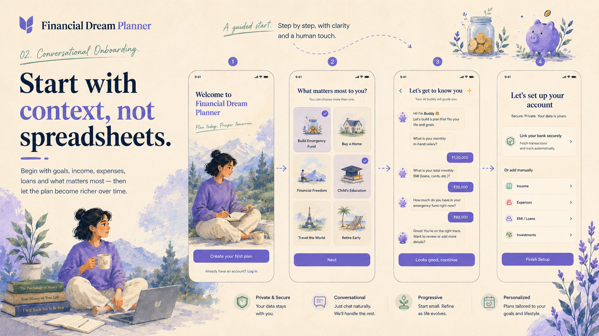
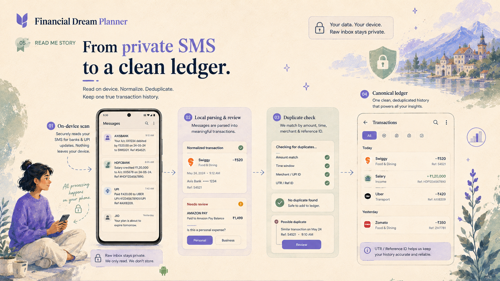
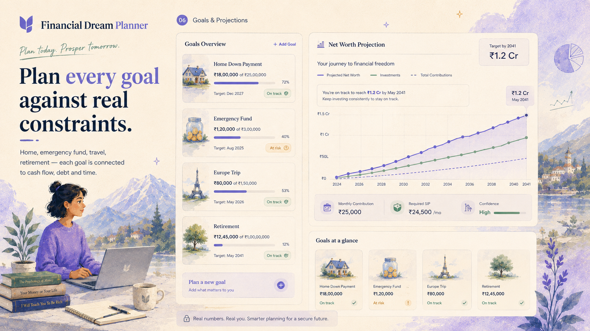
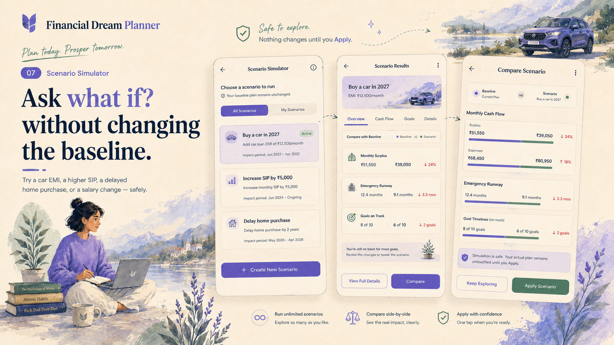
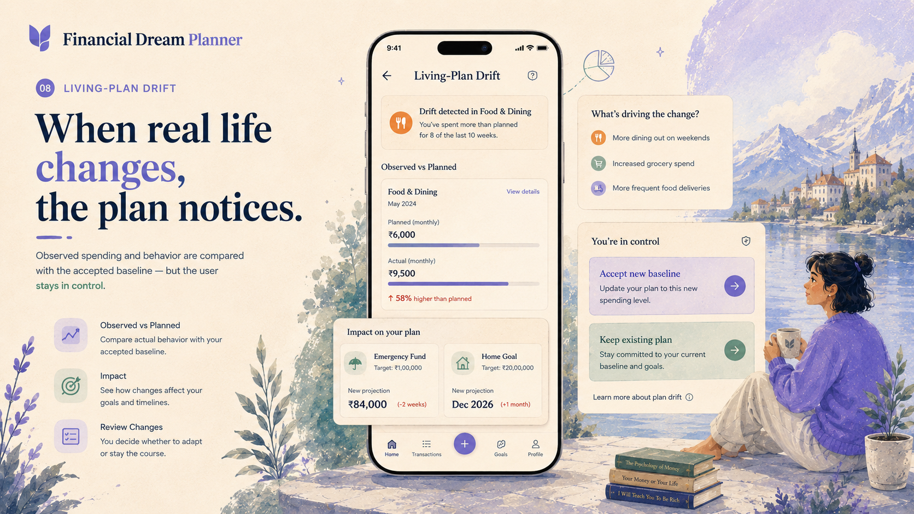
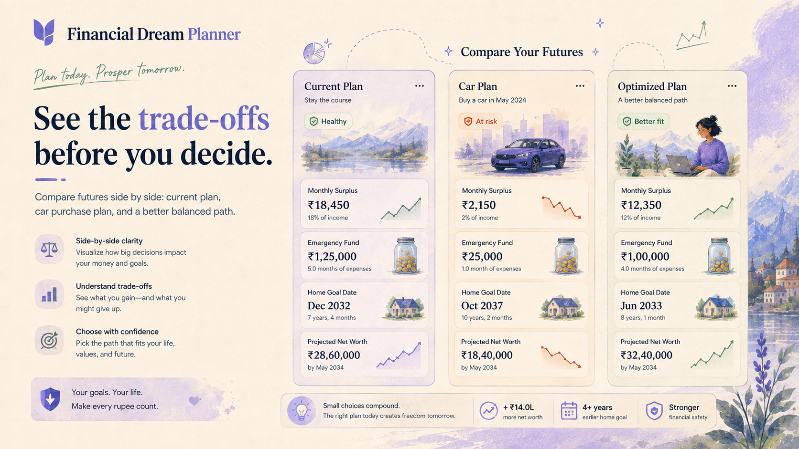
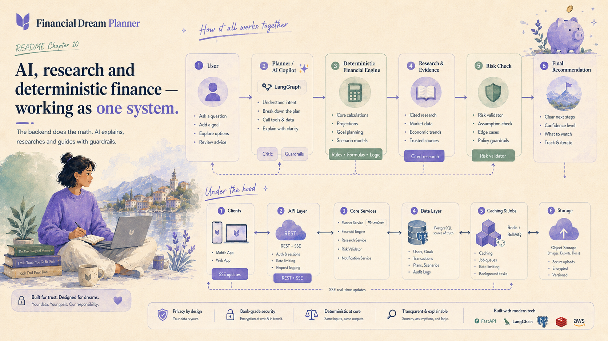

Living Financial Plan Hero
An integrated operating system for personal finance: ledger truth, deterministic math, scenarios, and guarded AI.
MODULE: system.md / app.tsAn India-first living financial plan: canonical money data, deterministic financial mathematics, what-if scenarios, autonomous plan drift, cited research, and guarded AI — working as one single coherent system.
Household-scoped accounts, canonical transaction ledger, source provenance, exact debt amortization, emergency runway, and cash-flow snapshot with strict net-zero vs. no-data semantics.
Deterministic scenarios for EMIs, SIPs, goal dates, and long-term wealth. Scenarios are side-effect-free overlays against immutable baseline snapshots. Applying is atomic with 409 stale protection.
One explainable next action backed by pure deterministic calculations, LangGraph bounded AI reasoning, cited regulatory research, and explicit user control over baseline plan mutations.
A modular monolith architecture with strictly separated concerns. The backend owns financial truth; clients present; pure TypeScript calculates; AI orchestrates and explains without becoming the calculator.
Cookie + CSRF auth, TanStack Query, generated OpenAPI client, shadcn/Base UI components.
On-device private SMS parser, SQLite cache, SecureStore PKCE bridge token exchange.
Type-safe typed API client generated directly from backend Express route schemas.
Rotating session families, mobile PKCE bridge code, OIDC broker, household tenant context.
ETag / Revision checks on mutations, double-submit CSRF cookies, correlation request IDs.
Liveness/readiness probes, bounded label prometheus `/metrics`, timing-safe auth.
2-tier deduplication (UTR unique + SHA-256 fingerprint), provenance tracking, cash flow.
Stateless TypeScript + 40-digit decimal.js, IN-2026.1 policy, EMI, SIP, Runway, Goals.
Immutable snapshot SHA-256 hashes, draft overlays, atomic apply with 409 stale check.
DRIFT-IN-2026.1 policy comparison; detection never rewrites plans; explicit user accept.
State graph, closed 8-tool registry, OpenAI/Gemini fallback router (no streaming fallback).
SSRF-defended fetcher, DNS rebinding defense, 6-tier source rank, 30-day freshness.
Deterministic block of stock tips / guarantees; critic validates citation household ownership.
Transactional outbox, BullMQ worker, Redis queue, durable idempotent run events.
All user state, ledger, plans, versions, research runs, audit trails. Redis loss never loses state.
R2/S3 object store, 2-step household deletion (15-min token), un-cascaded consent audit.
Subsystem path and responsibilities
Explore the engineering mechanics that distinguish Financial Dream Planner from conventional spreadsheet and chat wrappers.
Most financial aggregators ingest raw bank SMS into cloud storage. Financial Dream Planner treats raw messages as a strict privacy hazard: parsing and classifying occur strictly on the user's Android device. The backend receives only normalized financial movements, deduplicating them into one canonical truth.
External identifiers (UTR, RRN, bank reference) are guarded by a PostgreSQL unique index on (household_id, external_reference). Concurrent syncs attach provenance without duplicate transactions.
When external refs are absent, a SHA-256 fingerprint over (amount, direction, merchant, 5-min epoch) flags collisions as needs_review instead of silently merging ambiguous movements.
Computes with 40-digit decimal.js precision. When no observations exist, returns hasData: false and null. When credits equal debits, returns exact "0.00".
// Android On-Device Boundary
[Raw SMS Inbox]
│
▼ (Regex / On-Device ML)
[Normalized Observation]
│ amount: "450.00"
│ direction: "DEBIT"
│ merchant: "Swiggy"
│ utr: "523498172314"
│ (Raw text discarded)
│
═══════╪═════════════════════════════ (HTTPS REST)
│
// Backend Monolith Boundary
▼
[Deduplication Gate]
├── Check exact UTR in DB?
│ ├── Found ➔ Attach provenance source
│ └── Not found ➔ Compute Fingerprint
│
[PostgreSQL Canonical Ledger]
├── transactions (numeric 19,4)
└── transaction_sources (provenance)Financial calculations are pure functions in TypeScript. The engine has zero network access, zero database access, zero system clock dependencies, and zero randomness. It accepts base-10 decimal strings and retains 40 digits of internal precision with half-up rounding.
Default parameters (general inflation 6%, education/medical inflation 8%, return tiers 6/9/12%, emergency reserves 6/9/12 months) are immutably versioned. Historical outputs never silently inherit newer policy.
Missing user inputs generate typed completeness warnings rather than defaulting to 0 or arbitrary numbers, preventing false financial security in client projections.
Cash flow & surplus capacity, loan amortization, prepayment & refinancing analysis, SIP & step-up compounding, goal inflation & required contribution, asset allocation & net worth.
// Pure Functional Contract
calculateFinancialPlan({
profile: FinancialProfileInput,
assumptions: ResolvedAssumptions,
policyVersion: "IN-2026.1"
}): FinancialPlanOutput {
// 1. Fixed obligations & Cash Flow
const surplus = income.minus(expenses).minus(debtEmis);
// 2. Emergency Reserve Target
const runwayMonths = liquidAssets.div(monthlyBurn);
// 3. Goal Future Cost (Compound Inflation)
const futureCost = cost.times(
Decimal(1).plus(inflationRate).pow(years)
);
// 4. Required SIP (Annuity Formula)
const requiredSip = calculateAnnuity(futureCost, returnRate);
return { ...outputs, completenessWarnings };
}Financial planning is about trade-offs. The system models a single active plan per household with an append-only version tree. What-if scenarios are side-effect-free draft overlays that project alternative futures without touching the baseline.
Every calculation state writes a frozen snapshot with canonical SHA-256 input_hash and output_hash, preserving historic mathematical audit trails permanently.
Simulating early loan prepayment or a child education boost creates a draft overlay. Drafts can be simulated and compared side-by-side without changing current household state.
Applying a scenario requires the baseline version to be currently active. Uses PostgreSQL household advisory locks and rejects stale baselines with HTTP 409 Conflict.
[Plan: Household #101]
│
├── Baseline v1 (Snapshot #001) ───[Applied 2026-01-01]
│ │
│ ├── Draft Scenario A ("Prepay Home Loan")
│ │ ↳ Simulation Only (No DB mutation)
│ │
│ └── Draft Scenario B ("Buy Car + Stop SIP")
│ ↳ Simulation Only
│
└── [Explicit User Apply of Scenario A]
│ (Takes Household Advisory Lock)
│ (Verifies baseline is still v1)
▼
Baseline v2 (Snapshot #002) ───[Atomic Promotion]
↳ Monotonically increasing versionFinancial plans become obsolete when real spending deviates from plan projections. The drift engine continuously evaluates observed ledger reality against accepted baselines, but strictly obeys the rule: detection alone can never rewrite the plan.
Calculates variance against strict material thresholds (e.g., >10% sustained spending creep, >2 month emergency runway erosion, SIP deficit). Categorizes findings with deterministic ordering.
Deduplicates drift checks by (household_id, baseline_version_id, observed_input_hash). Outbox jobs converge on one check ID to prevent queue duplicates.
Users explicitly decide. Accept appends a new baseline version. Keep acknowledges variance but retains existing targets. Competing stale events fail with DRIFT_BASELINE_STALE.
[Accepted Plan Baseline] vs [Observed Ledger Transactions]
│
▼
[Drift Evaluation Job]
│
Material Variance Detected?
├── NO ➔ Record `no_change` (Expires in 90d)
└── YES ➔ Create `drift_event` (status: `pending`)
│
▼
[User Notification & Review]
│
┌──────────┴──────────┐
▼ ▼
[Click "Keep"] [Click "Accept"]
│ │
status: `kept` Atomic Transaction:
Baseline remains 1. Recompute Observed Hash
untouched 2. Advance Baseline to v3
3. status: `accepted`The AI tier never does mental arithmetic and cannot modify financial databases. It orchestrates across closed typed tools, runs SSRF-safe regulatory research, and passes every answer through deterministic safety and citation critic filters before responding.
Primary OpenAI-compatible provider routes to Gemini fallback ONLY on transient 429/5xx errors before streaming begins. 401, prompt injections, and policy violations fail closed immediately.
Tools are strictly Zod-validated with additionalProperties: false. Only deterministic finance calculations and market research queries are accessible.
Enforces DNS rebinding defense, IP literal blocking, RFC 1918 private IP rejection, 512 KB payload caps, and 6-tier source hierarchy (RBI/SEBI rank 1 down to public blogs rank 6).
[User Prompt]
│
▼
[Supervisor & Injection Check] ──(Detect attack? ➔ Fail Closed)
│
▼
[Financial State Context Node]
│
▼
[Requires Regulatory Research?]
├── YES ➔ [SSRF-Defended Research Fetcher]
│ ↳ DNS Pinning, 512KB limit, Regulators first
└── NO ──┐
▼
[Planner Reasoning Node (Closed Tools Only)]
│ ↳ calls: `calculate_loan_amortization`, etc.
▼
[Deterministic Risk Policy Node]
↳ Blocks stock recommendations, guarantees, trading tips
│
▼
[Critic Citation Validation Node]
↳ Verifies household evidence ownership & <30d freshness
│
▼
[Guarded Answer with Cited Sources]Every request derives authorization from server-owned state. Client-provided household IDs are rejected. Features built-in 90-day retention purging, durable privacy exports, and two-step household deletion.
Composite foreign keys enforce isolation across conversations, evidence, documents, and ledger rows. Cross-household queries return uniform, non-disclosing 404s.
Household deletion generates a hashed single-use token. Confirmation executes durable purge of all accounts, transactions, and snapshots while leaving minimal 30-day compliance tombstones.
Internal chain-of-thought (CoT), raw provider traces, and system prompts are never persisted in the database or logged in application monitors.
[Incoming Client Request]
│
▼
[Auth Context Resolution]
├── Token / Cookie verified
├── Resolve: User ➔ Household Member ➔ Role
└── Derives authenticated `householdId`
│ (Client cannot tamper with tenant ID)
│
[Database Boundary: Composite FKs]
├── accounts (household_id)
├── transactions (household_id)
├── plans (household_id, version_id)
└── evidence (household_id, research_run_id)
│
[Retention Pruner (Scheduled)]
├── Purges conversations > 90 days
├── Flags evidence > 30 days as stale
└── Leaves audit_events intact (non-cascading)Step through how real financial events traverse the client, gateway, deterministic engine, and durable storage layers.
Step detailed description
// code trace appears herePostgreSQL schema managed with Drizzle ORM. Every financial record is scoped by household tenant IDs with explicit concurrency revisions.
Visualizing how the user experience maps directly to implemented backend domain boundaries. Click any screen to view full resolution.
An integrated operating system for personal finance: ledger truth, deterministic math, scenarios, and guarded AI.
MODULE: system.md / app.ts
02 · ONBOARDINGProgressive disclosure: start with life goals, generate baseline snapshot, then enrich with observed accounts.
MODULE: auth / households / planner
03 · PRIVACY INGESTIONOn-device parsing protects user inbox privacy. Uploads normalized observations with 2-tier deduplication.
MODULE: transactions / dedupe
04 · DAILY PULSEReal-time financial health score, surplus capacity, active drift warning, and single explainable next action.
MODULE: financial-engine / drift
05 · WHAT-IF SIMULATORSimulate loan prepayment, investment step-ups, or goal deferrals as draft overlays before committing.
MODULE: scenarios / plans
06 · PLAN DRIFTNotices when real spending deviates from baseline. Requires explicit user "Accept" to advance baseline.
MODULE: drift / outbox / bullmq
07 · FUTURE COMPARISONMulti-scenario comparison: Current vs Option A vs Option B across corpus, runway, and debt burden.
MODULE: scenarios.service.ts
08 · SYSTEM MAPLangGraph orchestrator, SSRF-safe regulatory research, risk validator, and PostgreSQL durable store.
MODULE: planner / research / storageProduction topology, concurrency semantics, operational verification scripts, and observability boundaries.
| Architecture Layer | Selected Technologies | Design Rationale & Non-Negotiables |
|---|---|---|
| Backend Core | Node.js 20+ TypeScript Express 5 Zod | Standalone modular monolith; strict input validation with additionalProperties: false; shared domain use-cases. |
| Financial Mathematics | Pure TypeScript decimal.js (40 digits) | Zero network, DB, clock, or random dependencies; half-up rounding at typed boundaries; immutable IN-2026.1 policy. |
| Persistence & Database | PostgreSQL 16 Drizzle ORM | Single durable source of truth. Advisory locks on mutations; append-only snapshots; composite tenant keys. |
| Asynchronous Workers | Redis 7 BullMQ Transactional Outbox | Transactional outbox ensures database write and queue dispatch are atomic. Redis loss delays work but cannot erase state. |
| AI Orchestration | LangGraph JS OpenAI primary Gemini fallback | Closed 8-tool registry; provider fallback only for transient errors before first token emitted; risk & critic citation validation. |
| Cited Research Engine | Tavily Search SSRF Defended Fetcher | DNS rebinding protection; strict HTTPS only; RFC 1918 block; 6-tier authority rank (RBI/SEBI rank 1 to blogs rank 6); 30-day freshness. |
| Object Storage & Files | Cloudflare R2 / S3 In-Memory FakeStorage | Opaque nonces; private presigned download grants; two-step household deletion with 15-minute confirmation token. |
| Deployment & Operations | Docker Compose Prod Prometheus | Non-root containers; database migration barrier before API/worker boot; preflight scripts; safe backup/restore. |